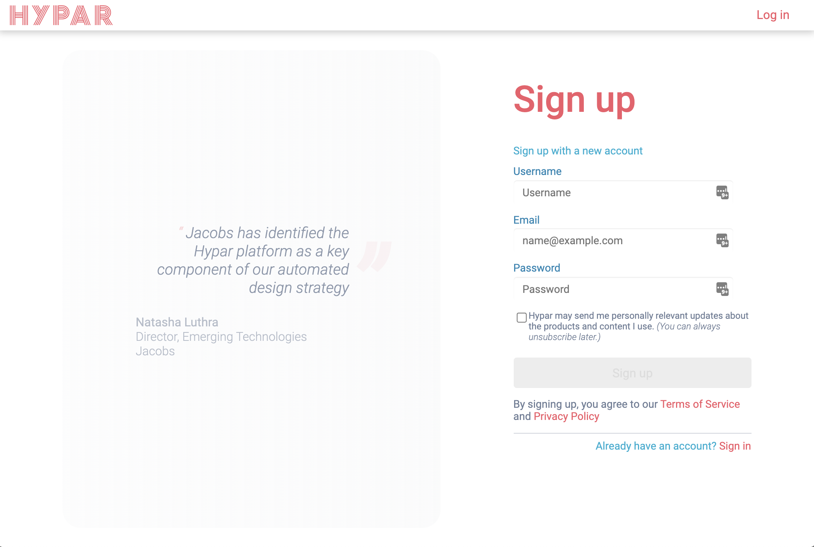

Getting Started with Hypar
Here's a short video that explains some of the Hypar concepts that we'll be using in this getting started guide.
Hypar is a cloud platform for generating buildings that makes it easy to publish, distribute, and maintain your building design logic. Rather than requiring web development skills to scale and deliver your design logic, Hypar lets you concentrate on what you want to get done while the platform creates the interface for your audience and provides computation, visualization, delivery, interoperability, and access control for your functions.
Signing up for Hypar
To use the Hypar platform, you're going to need an account. Point your browser to https://hypar.io, and you should see a page that looks like this.

If you don't have an account already, click on the Create a free account button below the logo. That should take you to the Sign Up screen.

Fill in a username, an email address you can access, and the password you'd like to use. Then click on the Sign up button.

Then we do some explaining:

Now check the email account you supplied for a message that looks something like this:

Click on the Verify Email link in the message and you should see a confirmation page:

Where to go next
That's it! You now have a Hypar account. Time to start building some workflows or authoring some functions! You might also explore these resources to get ideas for building a function, or learn more about the platform:
- Hypar's Discord live chat. Lots of people should be there to answer questions or share ideas.
- Hypar's YouTube channel has walkthrough videos and livestreams.